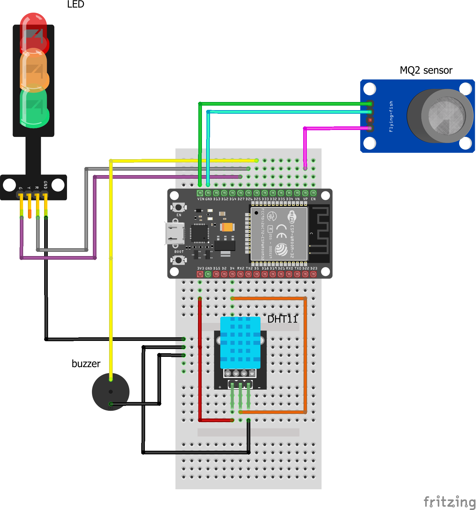
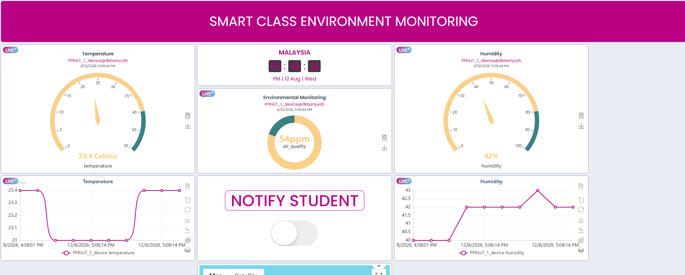

Smart Class Environment
& Air Quality Monitoring
Real-time microclimate tracking, smoke detection, local audiovisual warnings, and automated Favoriot MQTT cloud notifications for modern school safety.
Team 1 PPK
10-14 August 2026
ESP32 MCU • Favoriot MQTT Platform • Telegram Bot API
Project Objectives & Classroom Challenges
Classroom Challenges
- Poor Ventilation & Stuffy Air: High humidity and enclosed classrooms reduce student focus, cause drowsiness, and increase viral transmission risks.
- Smoke & Gas Hazards: Unmonitored smoke or chemical gas leaks near school laboratories, canteens, or electrical rooms pose immediate health threats.
- Lack of Instant Teacher Alerts: Traditional classrooms lack real-time digital sensors or remote alert systems to warn teachers when air quality degrades.
Project Solutions
- Continuous Microclimate Monitoring: Measure room temperature ($^\circ\text{C}$), humidity ($\%$), and smoke concentration using ESP32 with DHT11 and MQ-2.
- Visual Student Safety Guidance: Green LED indicates safe air. Red LED alerts students to put on protective masks or evacuate when gas exceeds 200 ADC.
- Remote Teacher Dashboard & Telegram Alerts: Teachers monitor classroom metrics on Favoriot, control the buzzer remotely, and receive instant Telegram alerts.
4-Layer IoT Architecture
Application Layer
Smart Classroom Dashboard & Management
- Favoriot Web Dashboard
- Telegram Alert Bot
- Remote Buzzer Switch
Data Processing Layer
Processing & Decision Unit
- Favoriot Cloud Engine
- Rules Engine (> 200 ADC)
- Telemetry Storage
Network Layer
Gateway & Data Transmission
- Wi-Fi (802.11 b/g/n)
- MQTT Broker (Port 1883)
- v2/streams & v2/rpc Topics
Sensing Layer
Physical Hardware & Sensors
- ESP32 Microcontroller
- MQ-2 Smoke Sensor
- DHT11 Temp & Humidity
Circuit Diagram & Pin Mapping

Fritzing Hardware Connections for ESP32 and Sensors
ESP32 Hardware Pin Allocation
| Component | Pin / Signal | ESP32 GPIO | Function |
|---|---|---|---|
| MQ-2 Gas Sensor | Analog Out (AO) | GPIO 36 (VP) | ADC1 Analog Smoke Reading |
| DHT11 Sensor | Data Signal | GPIO 4 | Digital Temperature & Humidity |
| Red LED | Anode ($+$) | GPIO 26 | Alert State (`air_quality > 200`) |
| Green LED | Anode ($+$) | GPIO 27 | Safe State (`air_quality <= 200`) |
| Buzzer Module | Positive ($+$) | GPIO 25 | 1 kHz Alarm Tone / Switch Override |
Software Architecture & MQTT Protocol
MQTT Telemetry Uplink
Topic: v2/streamsPublished every 15 seconds to Favoriot Broker (`mqtt.favoriot.com:1883`).
{
"device_developer_id": "PPKIoT_1_device@dkbariyyah",
"data": {
"temperature": 23.4,
"humidity": 42.0,
"air_quality": 54,
"led_status": "GREEN"
}
}MQTT RPC Downlink Control
Topic: v2/rpcTriggered instantly when teacher toggles the "NOTIFY STUDENT" switch widget.
// Received in callback() function:
{
"BUZZ": 1 // or "buzzer_switch": "ON"
}
// Microcontroller Execution:
tone(BUZZER_PIN, 1000);
digitalWrite(BUZZER_PIN, HIGH);Sub-second Latency
Instant RPC response over HTTP polling
API Key Authentication
Secure MQTT username/password headers
Auto Reconnection
`client.loop()` keeps connection alive
Favoriot Web Dashboard Showcase

Environmental Air Quality Gauge
Circular gauge reading real-time smoke concentration (54 ppm baseline reading).
Temperature & Humidity Gauges
Displays 23.4°C temperature and 42% humidity microclimate metrics.
"NOTIFY STUDENT" Control Switch
RPC switch enabling teachers to manually sound the classroom buzzer remotely.
Historical Time-Series Line Graphs
Tracks environmental trends over time for classroom microclimate analysis.
AQI Threshold Logic & Telegram Rules
Air Quality Threshold Mapping
| ADC Reading | Status | Action / Indicator |
|---|---|---|
| 0 – 50 | Good | Green LED ON |
| 51 – 100 | Unhealthy | Green LED ON |
| 101 – 150 | Poor | Green LED ON |
| 151 – 200 | Severe | Green LED ON |
| > 200 | Dangerous / Hazardous | RED LED + Telegram Alert |
Favoriot Cloud Rules Engine
🚨 [CLASSROOM AIR ALERT]
Air Quality index exceeded safety threshold!
Current Reading: 245 ADC. Please instruct students to put on protective masks.
Testing & Experimental Verification
- Sensor Reading: MQ-2 outputs baseline values between 50 – 180 ADC in normal room air.
- Hardware State: Green LED turns ON; Red LED remains OFF; Buzzer remains silent.
- Cloud State: Favoriot telemetry stream updates every 15s showing safe values; no Telegram alerts fired.
- Sensor Reading: MQ-2 reading spikes rapidly past 200 ADC upon smoke detection.
- Hardware State: Local Green LED shuts OFF and Red LED activates instantly.
- Cloud State: Favoriot Rules engine detects breach; sends instant Telegram alert notification within seconds.
System Performance Metrics
Wi-Fi Reconnect Time
< 3.5 Seconds
MQTT Downlink Latency
< 500 ms
Telegram Alert Delivery
< 2.0 Seconds
Telemetry Rate
Every 15 Seconds
Conclusion & Future Enhancements
Project Conclusion
The Smart Class Environment Monitoring system successfully demonstrates a robust, low-cost IoT safety solution for schools. By combining ESP32 microcontrollers with Favoriot's MQTT broker, the platform achieves instant local visual feedback, remote teacher control, and automated Telegram emergency notifications.
Future Enhancements
- Calibrated PPM Calculation: Upgrade logarithmic formulas to calculate exact PPM concentrations for specific gases (CO, LPG, Smoke).
- PM2.5 Dust Particle Integration: Add laser dust sensors (e.g., SDS011 or PMS5003) to monitor fine particulate haze in school halls.
- Solar & Battery Backup: Enable ESP32 deep sleep modes and solar charging for zero-downtime campus-wide deployment.
Thank You! Any Questions?
Team 1 PPK 10-14 August 2026 • Smart Class Environment Monitoring